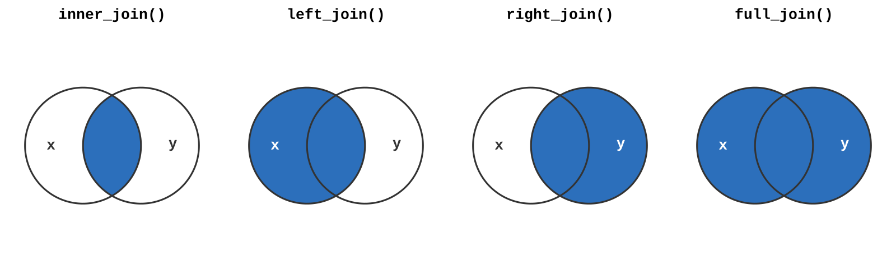
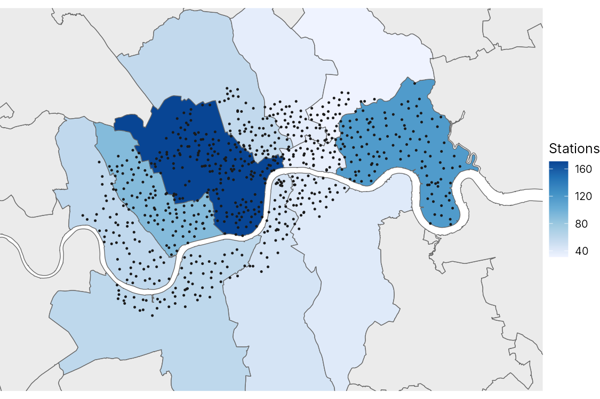

15 Joins: Attribute and Spatial
By the end of this chapter you should be able to:
- Explain what a join does, and combine two tables with dplyr’s
inner_join(),left_join(),right_join(), andfull_join(). - Name the key of a join with
join_by(), and chain joins to combine three or more tables. - Describe the cardinality of a relationship, and predict how many rows a join will return.
- Explain how a spatial join uses location instead of a shared column, and run one with
st_join(). - Choose between simple and summarized, inside and distance spatial joins.
- Avoid wrong distances in a spatial join by checking and projecting the coordinate reference system.
Data rarely arrive in one table. Student names live in one table and the courses they take in another. Census counts live in a spreadsheet and county boundaries in a shapefile. EMS calls are points and neighborhoods are polygons. To answer most questions, you have to put two tables together.
A join combines two or more tables by matching rows. This chapter covers two kinds:
- An attribute join matches rows that share a value in a common column, such as a student ID or a county FIPS code.
- A spatial join matches features by their location, such as which neighborhood each EMS call falls inside.
15.1 What is a join?
Recall that a data table has one row per observation and one column per variable. A join lines up the rows of two tables wherever a shared column has the same value. That shared column is the key.
Here are two small tables. students has one row per student. takes has one row for each course a student took. Both have an id column. Run the box to make them:
Look closely before you join. Zhang took two courses. Parr and McKeon took none. And two rows of takes belong to IDs, 33456 and 45678, that aren’t in students at all. Each type of join treats these unmatched rows differently.
15.2 Types of joins
It helps to think of each table as a collection of rows, drawn as a circle. Where the circles overlap are the rows whose key appears in both tables. A table with no duplicate rows is a set; one that may have duplicates is a bag, and R data frames behave like bags.

15.2.1 Inner join
An inner join keeps only the rows whose key appears in both tables:
Parr and McKeon are dropped because they took no courses, and the two GEOG-215 rows are dropped because no student matches them. Zhang appears twice, because Zhang took two courses.
The by = join_by(id) part names the key. You could leave it out and dplyr would guess, but naming it is the habit to build.
15.2.2 Left join
A left join keeps every row of the left table, the first one, and adds the matching columns from the right table:
Parr and McKeon now appear, with NA in the course columns. This is the join you will use most, because it never drops a row from the table you care about. But check the row count afterwards: it can grow when a key has several matches. students has 4 rows, and the result has 5.
15.2.3 Right join
A right join is the mirror image. It keeps every row of the right table:
Now the GEOG-215 rows appear, with NA for name and department. Any right join can be written as a left join by swapping the order of the tables, and most people find the left join easier to read.
15.2.4 Full join
A full join keeps every row from both tables. It matches rows where it can and fills in NA where it can’t, so nothing is dropped:
15.2.5 Natural joins and cross joins
Two more joins are worth knowing about, mostly so you can avoid them by accident.
A natural join is an inner join on every column the two tables share by name. In dplyr, if you leave out by, inner_join() does exactly this and prints a message, such as Joining with `by = join_by(id)`, to tell you which columns it used. It’s convenient but fragile. If both tables also had a column called name or year, it would silently join on that too. In your own code, spell out the key.
A cross join pairs every row of one table with every row of the other: the cartesian product. In dplyr it is cross_join(). Our 4 students and 5 course rows give 20 rows. It grows fast: two tables of 1,000 rows give a million.
You may also meet a self join, which joins a table to itself, such as a table of employees joined to their managers in the same table.
Suppose the keys were stored differently in the two tables: "00128" as text in one and 128 as a number in the other. Would they match? How would you find out, and how would you fix it?
15.2.6 Joining more than two tables
Joins chain. Pipe the result of one join into the next to combine three or more tables. Here we add an instructor table, keyed by course_id:
Notice that the key changes from step to step: id for the first join and course_id for the second. Each inner join can only drop rows, so if records go missing, check the row count after each step to see where.
15.3 Cardinality
Before you run a join, ask how many rows on each side can match. Cardinality is the relationship between the rows of two tables, and it tells you how big the result will be.
| Cardinality | Meaning | Examples |
|---|---|---|
| One-to-one | Each row matches at most one row in the other table | Governor and state; person and passport |
| One-to-many | One row matches many rows in the other table | Book and pages; state and cities |
| Many-to-one | The same relationship, seen from the other side | Cities and state; students and advisor |
| Many-to-many | Rows on both sides can match many rows | Students and classes |
students to takes is one-to-many: one student can take many courses. That is why Zhang’s row was copied in the result. A many-to-many join multiplies rows on both sides, and can make a result far bigger than either table. dplyr warns you when it finds one.
So here is the rule of joining: know the cardinality before you join. It tells you how many rows to expect, and if the result has a different number, something about your keys isn’t what you thought. Cardinality will matter again when we design databases later in the course.
15.4 Why join by location?
So far the key has been a shared column. But often two tables share no ID at all, only location. Consider three questions:
- How many EMS calls fall in each neighborhood? The calls are points and the neighborhoods are polygons.
- How many students attend school in each district? The schools are points with an enrollment, and the districts are polygons.
- What is a coffee chain’s revenue in each sales region? The stores are points with revenue, and the regions are polygons.
All three have the same shape. Join each point to the polygon it falls inside, then summarize by polygon. The key is location.
15.5 Spatial joins
15.5.1 From attribute joins to spatial joins
In GIS terms, an attribute join has a destination table that receives new columns, a source table that supplies them, and a common field that links the two. The output is the destination table with the source’s columns added.
A spatial join has the same structure, but the link is a spatial relationship instead of a common field. Two relationships cover most needs:
- Inside: one feature falls inside, or intersects, another. Each school gets the attributes of the county it is in.
- Distance: one feature is closest to another. Each city gets the attributes of the nearest airport.
15.5.2 Spatial joins in R
In R, the sf package does spatial joins with st_join():
st_join(x, y, join = st_intersects)x is the destination and y the source. The join argument sets the relationship:
st_intersects(the default) orst_withinfor one feature inside another;st_nearest_featurefor the closest feature.
By default st_join() keeps every row of x, like a left join. Set left = FALSE to get an inner join, which drops the features of x that matched nothing.
Here is a real example, using two datasets from the spData package: the 742 bicycle hire stations in London, as points, and London’s 33 boroughs, as polygons. Which borough is each station in?
library(sf)
library(dplyr)
library(spData)
# Project both layers to the British National Grid, in meters
stations <- cycle_hire |> st_transform(27700)
boroughs <- lnd |> st_transform(27700)
stations_joined <- st_join(stations, boroughs["NAME"])
nrow(stations_joined) # 742: one row per stationEach station now carries a NAME column: the borough it falls inside. One station sits just outside every borough polygon, so its NAME is NA; left = FALSE would drop it.
15.5.3 Four kinds of spatial join
Two decisions define a spatial join: the relationship (inside, or distance), and whether you attach one match per feature or summarize all of them (Table 15.2).
| Simple: attach one matching record | Summarized: aggregate all matches | |
|---|---|---|
| Inside | Which county is each school in? (schools ← counties) | How many schools are in each county? (counties ← schools) |
| Distance | Which attraction is closest to each hotel, and how far is it? (hotels ← attractions) | How many attractions are closest to each hotel? (hotels ← attractions) |
A simple join attaches the attributes of one matching feature. Each septic system gets the geology formation underneath it; each city gets its nearest airport and the distance to it. In both cases, every destination feature has exactly one match, and one source feature can match many destination features, so the cardinality is many-to-one. There is no ambiguity about which fields to attach.
A summarized join handles one-to-many and many-to-many relationships. When one county contains many schools, a simple join can’t pick just one. Instead, a summarized join counts or aggregates the matching features, such as the number of schools in each county, or their total enrollment, and attaches that.
The rule of joining applies to spatial joins too. Simple joins are one-to-one or many-to-one. Summarized joins handle one-to-many and many-to-many by aggregating.
15.5.4 Summarized joins in R
In R, a summarized join is st_join() followed by group_by() and summarize(), or count(). To count the stations in each borough:
station_counts <- stations_joined |>
st_drop_geometry() |>
count(NAME, name = "n_stations")
boroughs <- boroughs |>
left_join(station_counts, by = join_by(NAME))The last step is an attribute join. Dropping the geometry first turns the joined stations into a plain table, and left_join() keeps all 33 boroughs, with NA for the 22 that have no hire stations. Westminster has the most, with 171 (Figure 15.2).

For a distance join, use st_nearest_feature, then measure how far away the match is with st_distance():
cities_airports <- st_join(cities, airports, join = st_nearest_feature)
nearest <- st_nearest_feature(cities, airports)
cities_airports$dist <- st_distance(cities, airports[nearest, ],
by_element = TRUE)15.6 Spatial joins and the coordinate system
What units is a distance in? Software reports distances in the units of the data’s coordinate system. If the data are in a geographic coordinate system, those units are decimal degrees, and a distance of 0.47 means 0.47 degrees. As Section 12.7 showed, degrees can’t simply be converted to miles or kilometers, because a degree of longitude shrinks toward the poles.
Worse, the match itself can change. Degrees stretch unevenly, so the feature that is nearest in degrees isn’t always the one that is nearest on the ground. A distance join run on latitude and longitude can attach a different feature than the same join run in a projected coordinate system.
So, before any spatial join:
- Check each layer’s coordinate system with
st_crs(). - Make sure both layers use the same one.
st_join()stops with an error if they don’t. - For distance joins, project both layers with
st_transform()to a projection that preserves distance in your study area, such as State Plane for North Carolina (EPSG:32119).
15.7 Check your understanding
Which join keeps only the rows whose key appears in both tables?
You left-join
students(4 rows) totakes. One student took two courses and the others took none or one. Can the result have more than 4 rows?Any right join can be rewritten as a left join by swapping the order of the tables.
A cross join of a 10-row table and a 30-row table has how many rows?
What is the cardinality between students and their academic advisor, if each student has one advisor?
In
st_join(x, y), which layer receives the new attributes?Which
joinargument attaches the closest feature?Counting the schools in each county is an example of a:
A distance join on data in latitude and longitude gives the same matches as the same join on projected data.
15.8 Summary
- A join combines tables by matching rows. An attribute join matches a shared key column; a spatial join matches by location.
- dplyr’s inner join keeps matches only; a left join keeps every row of the first table; a right join keeps every row of the second; a full join keeps everything. Name the key with
join_by(), and chain joins with the pipe. - A natural join matches on every shared column name, which is fragile. A cross join pairs every row with every row.
- Cardinality (one-to-one, one-to-many, many-to-one, many-to-many) tells you how many rows a join will return. Know it before you join.
st_join(x, y, join = ...)attaches the attributes ofytoxusing a spatial relationship:st_intersectsorst_withinfor inside,st_nearest_featurefor distance. It keeps every row ofxunlessleft = FALSE.- Simple spatial joins attach one match; summarized joins aggregate many, with
group_by()andsummarize()orcount(). - Distances come out in the data’s units. Check the CRS with
st_crs()and project withst_transform()before joining by distance.
15.9 Exercises
- Predict, then run. Before running each join in Section 15.2, write down how many rows you expect and which names will have
NA. Then check. - Find the unmatched rows. dplyr has two filtering joins:
semi_join()keeps the rows ofxthat have a match iny, andanti_join()keeps the rows that don’t. Useanti_join()to list the students who took no courses, and the course rows with no matching student. - Cardinality. Give the cardinality of each relationship, and explain: (a) capital city and state; (b) students and phone numbers; (c) counties and ZIP codes; (d) census tracts and counties.
- Base R. Base R’s
merge()also joins tables. Find the arguments tomerge()that give an inner, a left, and a full join ofstudentsandtakes. - London bikes. Reproduce the station counts in Figure 15.2. Then make a map of stations per square kilometer of each borough. Does the ranking change?
- NC schools. Find a point layer of North Carolina public schools on NC OneMap, https://www.nconemap.gov. Join it to NC counties and count the schools in each county. Which county has the most schools? The most per 10,000 people?
15.10 Further reading
- R for Data Science (2nd ed.), by Hadley Wickham, Mine Çetinkaya-Rundel, and Garrett Grolemund, free at https://r4ds.hadley.nz. The “Joins” chapter covers keys, every dplyr join, and how to check them.
- Geocomputation with R (2nd ed.), by Robin Lovelace, Jakub Nowosad, and Jannes Muenchow, free at https://r.geocompx.org. The “Spatial data operations” chapter covers spatial joins, distance joins, and spatial aggregation.
- Database System Concepts, by Abraham Silberschatz, Henry F. Korth, and S. Sudarshan, explains joins and cardinality from the database side.
GEOID with
left_join().
The tidyverse package for transforming data frames: filtering rows,
choosing columns, adding new columns, joining tables, and summarizing.
The column whose values are matched to line up rows in a join, such as a
student ID or a county FIPS code.
How many rows in one table can match a row in another: one-to-one,
one-to-many, many-to-one, or many-to-many.
A join that matches features by their location, such as attaching to
each point the polygon it falls inside. st_join() in R.
The rules that tie coordinates to places on the Earth, including how the
round Earth is flattened onto a map (the projection). Layers must share
a coordinate system before you can combine them.
A closed shape that represents an area, such as a county, a lake, or a
census tract.
A join that matches rows using a shared key column.
A standard numeric code for a state or county (Federal Information
Processing Standards). North Carolina is 37.
One thing that was measured or recorded, such as a student, a county, or
a flight. In a data frame, each row is an observation.
In R, a named piece of memory that holds data, such as
months <- 12. In a dataset, a measured characteristic,
such as median income; each Census variable has a code.
R’s table: rows are observations and columns are variables. A tibble is
the tidyverse’s version of a data frame.
A join that keeps only the rows whose key appears in both tables.
inner_join() in dplyr.
A join that keeps every row of the first (left) table, with NA where the
second table has no match. left_join() in dplyr.
A join that keeps every row of the second (right) table.
right_join() in dplyr.
A join that keeps every row of both tables, with NA wherever there is no
match. full_join() in dplyr.
An inner join on every column the two tables share by name. Handy but
fragile, so name your key instead.
A join that pairs every row of one table with every row of the other.
cross_join() in dplyr.
A join of a table to itself, such as employees to their managers.
The operator |>, which passes the result on its left as
the first argument of the function on its right. Read it as “and then.”
A relationship where each row matches at most one row in the other
table, such as states and governors.
A relationship where one row matches many rows in the other table, such
as a state and its cities.
A relationship where many rows match one row in the other table, such as
cities and their state.
A relationship where rows on both sides can match many rows, such as
students and classes. Joins like this multiply rows.
In a join, the table that receives new columns: x in
st_join(x, y).
In a join, the table that supplies the new columns: y in
st_join(x, y).
“Simple features”: the R package for spatial vector data. An sf object
is a data frame with a geometry column holding each row’s point, line,
or polygon.
A bundle of code, written by other users, that adds new functions to R.
Install it once with install.packages(), then load it in
each session with library().
An input to a function, written inside its parentheses.
A spatial join that attaches the attributes of one matching feature,
such as the county each school is in.
A spatial join that aggregates all the matching features, such as
counting the schools in each county.
Coordinates written as signed decimal numbers, such as −79.05°. Negative
means south latitude or west longitude.
The angle east or west of the Prime Meridian, from 0° to 180°. Lines of
equal longitude are meridians.
The angle north or south of the Equator, from 0° to 90°. Lines of equal
latitude are parallels.
A method for flattening the curved graticule onto a flat map. Every
projection distorts shape, area, distance, or direction.
A set of local projections for the US, with one or more zones per state,
in feet or meters. North Carolina’s zone is EPSG:32119.
A small area of about 1,200 to 8,000 people (4,000 on average), drawn to
be fairly stable over time. The workhorse unit for neighborhood
analysis.
North Carolina’s statewide GIS data portal, https://www.nconemap.gov/, with layers from state and
local agencies.